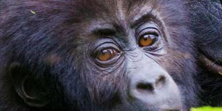
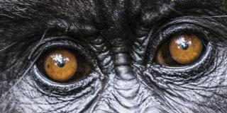

Gorilles Dos Argenté

C'est le plus grand et le plus fort de tous les singes anthropoïdes. Le nombre d'espèces ou de sous espèces ne semble pas maîtrisé mais on connaît : Le gorille des plaines occidentales (gorilla gorilla gorilla) qui vit à l'ouest de l'Afrique centrale, au Cameroun, Gabon, Congo et Guinée équatoriale. Le gorille des plaines orientales (gorilla gorilla graueri) qui est beaucoup plus foncé et qui habite à l'Est du Zaïre, des plaines bordant la rivière jusqu'aux montagnes. Le gorille des montagnes (gorilla gorilla beringei) qui est noir et qui possède une fourrure plus longue vit sur les volcans du Virunga au Zaïre, Rwanda et Ouganda.
Gibbon

Le gibbon fait en effet également partie des singes anthropoïdes mais contrairement au chimpanzé, bonobo, gorille et orang-outan qui font partie du genre Pongidés, le gibbon fait partie du genre des Hylobatidés. Genre qu'il partage avec le siamang. Le gibbon vit dans les forêts d'Asie du sud est. Il est caractérisé par ses longs bras avec lesquels il se balance de branche en branche. Arboricole et très agile le gibbon n'a donc presque pas de prédateur (hormis l'homme).
Ourang-Outan

Le nom « orangutan » (orang-outan ou orang-outang en français) signifie « l'homme de la forêt ». Il vient du Malais et du Bahasa Indonésien (langue officielle de la république d'Indonésie) : orang (l'homme) et hutan (la forêt). Les orangs-outans sont des créatures extrêmement intelligentes qui ont sans nul doute la capacité de raisonner et de réfléchir. Les similitudes que nous partageons avec eux sont sans appel...
The monkeys

Another thing that makes chimpanzees and humans remarkable is our culture, or all the learned traditions, behaviors, and values passed through generations. Because primates learn from other members in their social groups, different geographical populations of chimpanzees and humans exhibit predispositions to different behaviors, making groups culturally distinct from one another.
Bonobo
Aussi appelé chimpanzé pygmée, le bonobo a été longtemps considéré comme une sous espèce de chimpanzé. Il lui ressemble mais est plus élancé et moins robuste. Il a la peau du visage noire et ses poils partent latéralement de chaque côté du front. Végétarien, il ne chasse pas. Il vit en groupe le long du fleuve Congo en République Démocratique du Congo.
Chimpanzees

Les chimpanzés vivent dans les forêts africaines. Il existe 4 sous espèces de chimpanzés. Les chimpanzés sont très sociaux ; ils vivent en communauté pouvant atteindre une centaine d'individus dirigée par un mâle dominant. Le rang d'un membre dans la hiérarchie du groupe dépend de sa naissance et de sa sociabilité, notamment au cours des séances d'épouillage mutuel.
The monkeys
Another thing that makes chimpanzees and humans remarkable is our culture, or all the learned traditions, behaviors, and values passed through generations. Because primates learn from other members in their social groups, different geographical populations of chimpanzees and humans exhibit predispositions to different behaviors, making groups culturally distinct from one another.
The monkeys

Another thing that makes chimpanzees and humans remarkable is our culture, or all the learned traditions, behaviors, and values passed through generations. Because primates learn from other members in their social groups, different geographical populations of chimpanzees and humans exhibit predispositions to different behaviors, making groups culturally distinct from one another.